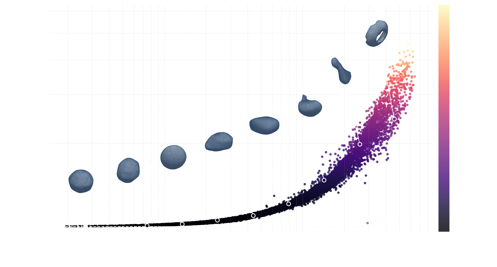
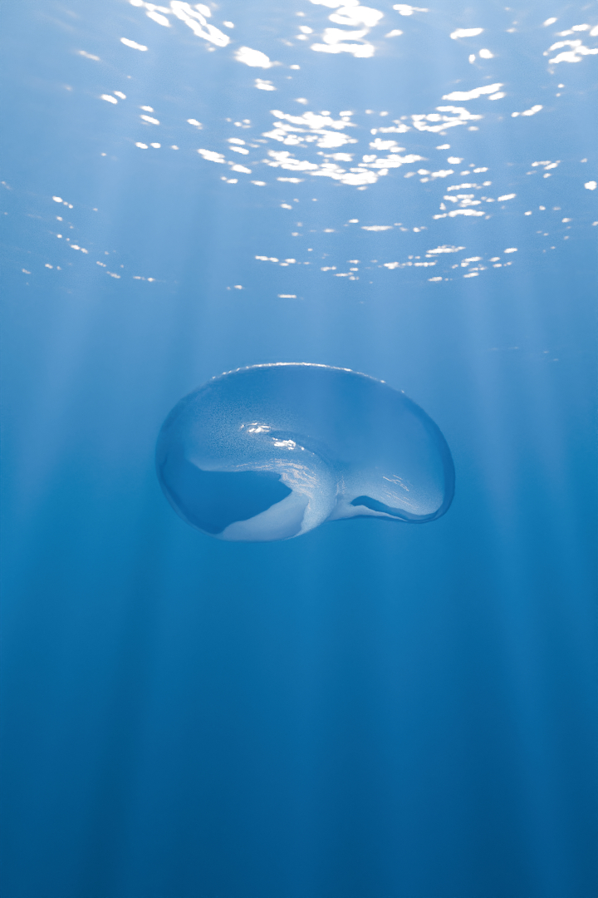
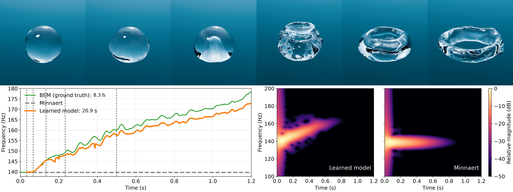
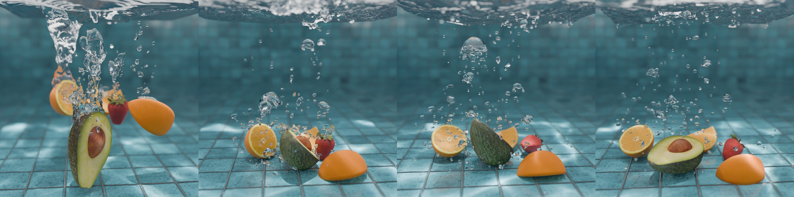
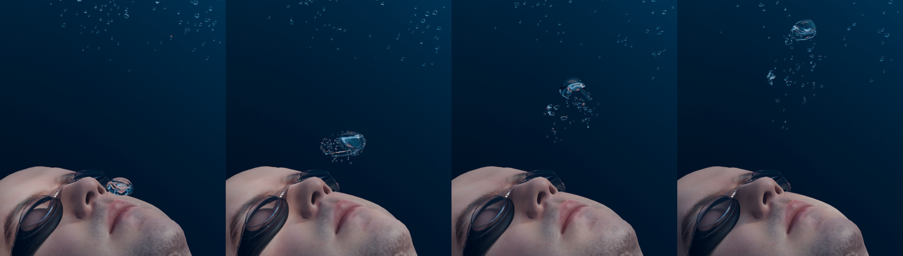

Water sounds are dominated by the acoustic radiation of entrained air bubbles. The resonant frequency of a bubble depends critically on its size, shape, and proximity to nearby boundaries, and is governed by the capacitance of the bubble in the exterior mixed-boundary Laplace problem. Existing bubble-frequency models face a difficult trade-off: spherical approximations are efficient but inaccurate for deformed bubbles common in fluid simulations (multiple semitones of pitch error), whereas boundary element methods (BEM) accurately account for nonspherical geometry but are prohibitively expensive. A practical method for bubble frequency estimation is, therefore, highly desirable for the efficient authoring of physics-based water sounds.
In this paper, we present BubbleGym, a framework for efficient, shape-aware bubble source modeling. BubbleGym introduces a benchmark dataset of 10k nonspherical bubble meshes with ground-truth frequencies. We first propose a moment-matching ellipsoidal proxy model that improves efficiency but remains limited when handling strongly deformed shapes, such as bent bubbles. We then adopt a learned, compact, scale-invariant mapping from a curated set of bubble shape features to resonant frequency. We observe that the resulting model runs up to 1428× faster than BEM while maintaining a mean error of less than 1% (under 17 cents, below the perceptual JND for transient sounds) on the test set. Integrated into a complete water-sound synthesis pipeline, our method enables high-fidelity audio for complex, bubble-rich scenes at a fraction of the cost of direct BEM evaluation.

Interactive shape space All 10,000 bubbles in 3D, coloured by frequency. Hover a point to see its mesh. 10,000 meshes · 8 descriptors · BEM ground truth Benchmark dataset What is in the set, what each column means, and where to get the CSV and the meshes.git lfs install
git clone https://github.com/stanford-gfxsim/BubbleGym.git
cd BubbleGym
pip install -r requirements.txt
# dataset/ BEM ground truth + meshes
# python/bem/ BEM solver
# python/shape_feature/ descriptors
# python/freq_model/ models + weights
Bubble Theater Three procedural sequences — ellipsoid, curl noise, Enright — with every frequency model against BEM.
Single rising bubble A sphere deforming into a torus as it rises. Our model tracks BEM; Minnaert stays fixed.
Fruit Splash Five fruit dropped into a tank. 54,116 bubbles, each with BEM, surrogate and Minnaert frequencies.
Underwater exhalation A character exhales underwater, producing large bubbles that deform as they rise.@inproceedings{li2026bubblegym,
author = {Li, Zhehao and Wu, Kui and Li, Wei and James, Doug L.},
title = {BubbleGym: A Practical Shape-to-Frequency Model for Acoustic Bubbles},
booktitle = {SIGGRAPH Asia 2026 Conference Papers (SA Conference Papers '26)},
year = {2026},
location = {Kuala Lumpur, Malaysia},
publisher = {Association for Computing Machinery},
address = {New York, NY, USA},
doi = {10.1145/3829340.3842193},
isbn = {979-8-4007-2842-6}
}The authors thank the anonymous reviewers for their constructive feedback, and Adobe and Activision for support. Houdini software courtesy of SideFX. This work was supported in part by the Office of Naval Research (ONR) under Grant N000142512024, “Advancing Underwater Sound Synthesis Techniques for Ocean Acoustics.” Zhehao Li acknowledges support from the Stanford School of Engineering Fellowship. Wei Li acknowledges the Shanghai Pujiang Program (25PJD058) and SJTU’s startup funds. We used AI tools, including Claude (Anthropic), for editing and coding assistance; the authors take full responsibility for the content of this paper.